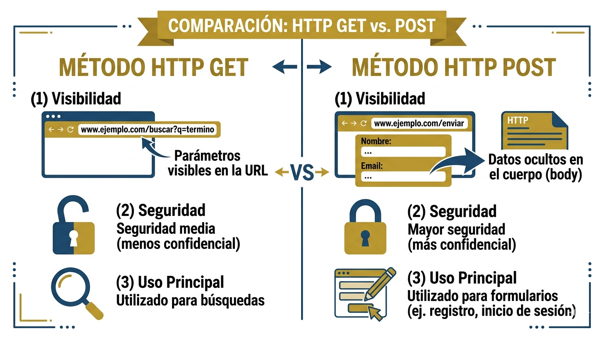

Paso 2: La Solicitud HTTP
Una vez que el navegador conoce la IP del servidor, envia una
solicitud HTTP (HyperText Transfer Protocol).
Los dos metodos mas comunes son GET y POST.

Metodos HTTP principales
| Metodo | Descripcion | Cuando se usa | Ejemplo |
|---|---|---|---|
| GET | Solicita datos sin modificarlos | Cargar paginas, busquedas | GET /index.html HTTP/1.1 |
| POST | Envia datos al servidor para procesar | Formularios, login | POST /login HTTP/1.1 |
| PUT | Actualiza un recurso existente | Edicion de datos (APIs REST) | PUT /usuario/5 HTTP/1.1 |
| DELETE | Elimina un recurso del servidor | Borrado de registros | DELETE /articulo/3 HTTP/1.1 |
Ejemplo de cabecera HTTP GET
GET /index.html HTTP/1.1
Host: www.utpl.edu.ec
Accept: text/html
Accept-Language: es-EC
User-Agent: Mozilla/5.0